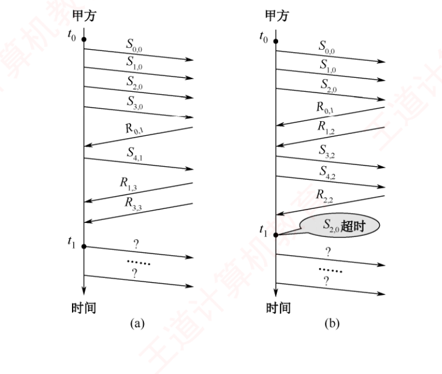

408
408先答旧题
30 dB 对应多大的 S/N？
一个码元 16 种状态带几比特？
曼彻斯特编码的优缺点？
物理层只管传比特，可比特会出错，也不知道哪些比特是一组。链路层要解决三件事：分帧、检错、把不可靠的线路变可靠。滑动窗口第一次出现，到 TCP 还会再用。
其之壹组帧
四种组帧方法
字符计数法：首字节写长度。一错全错。
字符填充（字节填充）：FLAG 定界，内容中有 FLAG 就加转义字符。
零比特填充（HDLC）：FLAG = 01111110；发送方遇到 5 个连续 1 就插入 0，接收方删掉。
违规编码：用曼彻斯特中不用的码。
走一遍：数据 0111111。发送方数到 5 个 1 插 0：01111101。这样数据里不会出现 6 个连续的 1，就和 FLAG 分开了。
其之貳差错控制
奇偶校验：加 1 位让 1 的个数为奇（或偶）。只能发现奇数个错。
CRC（检错，不纠错）
生成多项式最高次 r，就在数据后补 r 个 0，模 2 除，余数就是校验码。
接收方再除，余数 0 则无错。
走一遍：数据 101001，生成多项式 1101（最高次 3）。后面补 3 个 0 得 101001000，模 2 除（异或，不借位）。余数 001。发送 101001001。接收方再除，余数为 0。
海明码（纠 1 位，检 2 位）
校验位数 r：2ʳ ≥ m + r + 1。
校验位放在 2 的幂次位（1,2,4,8…）。
第 i 个校验位负责所有编号二进制第 i 位为 1 的位。
纠错：把校验的异或结果拼起来，就是错的那一位的编号。
海明距离 d：检错 d−1，纠错 (d−1)/2。
走一遍：数据 1011（4 位），2³ ≥ 4+3+1，校验 3 位，放 1、2、4 位。数据放 3、5、6、7 位：d3=1，d5=0，d6=1，d7=1。
- P1 管 1、3、5、7：P1 = 1⊕0⊕1 = 0。
- P2 管 2、3、6、7：P2 = 1⊕1⊕1 = 1。
- P4 管 4、5、6、7：P4 = 0⊕1⊕1 = 0。
码字 0110011。如果第 6 位错了，重算 P4、P2、P1 得 110 = 6，正好指向错的那一位。
合上页面说一遍：零比特填充规则？CRC 补几个 0？海明校验位数公式？
5 个 1 插 0。补 r 个 0（r 是最高次）。2ʳ ≥ m+r+1。
其之參滑动窗口
流量控制：发送方不能快过接收方。可靠传输：丢了要重传。这两件事都靠确认和窗口。发送方最多连发 W 帧未被确认；每收到确认，窗口向前滑。
停止-等待：发一帧等一个确认，一帧一确认，窗口 1。序号只用 1 位，为防重复帧。线路长时大部分时间在等，利用率低。
三协议窗口上限（序号 n 位）
| 协议 | 发送窗口 | 接收窗口 |
|---|---|---|
| S-W | 1 | 1 |
| GBN | ≤ 2ⁿ − 1 | 1 |
| SR | ≤ 2^(n−1) | ≤ 2^(n−1) |
SR 中 W发 + W收 ≤ 2ⁿ。
为什么有上限
序号是循环的。窗口太大，重传的旧帧编号和新帧编号一样，接收方分不清。比方：3 位序号时 GBN 发送窗口取 8，发完 0–7 后全部确认丢了，发送方重发 0，接收方正等新的 0，于是当成新帧。
累积确认：GBN 的 ACK n 表示 n 及以前都收到了。发送方只用给最早的未确认帧设一个超时计时器。SR 要给每帧都设计时器。
其之肆信道利用率
利用率母公式
U = min(1, N · T_D / T)
N：窗口大小（S-W 为 1）；T_D：发一帧的时间；T：发送周期，从开始发到收到确认 = T_D + RTT + T_A。
不计确认帧：T_A = 0。
捎带确认等长帧：T_A = T_D。
实际速率 = U × 带宽。
算一遍：帧 1000 b，带宽 100 kb/s，T_D = 10 ms；RTT = 30 ms，不计确认帧时间。T = 40 ms。
- 停止-等待：U = 10/40 = 25%，实际 25 kb/s。
- GBN，N = 7：7×10/40 > 1，所以 U = 100%。
最小序号位数：要满速，N 至少 T÷T_D = 4，GBN 要 2ⁿ−1 ≥ 4，n = 3。
合上页面说一遍：三种协议的窗口上限？信道利用率公式？
S-W 1；GBN 发 ≤2ⁿ−1；SR 发收都 ≤2^(n−1)。U = min(1, N·T_D/T)，T = T_D+RTT+T_A。
领域展开
组帧：5 个 1 插 0。CRC：补 r 个 0，模 2 除。海明：2ʳ≥m+r+1。
窗口：GBN ≤2ⁿ−1；SR ≤2^(n−1)。
利用率：U = N·T_D / T。
其之伍实战
注：HDLC 协议已从最新大纲中删除，但零比特填充规则本身仍是考点。
再深一层
原串 0 1 1 1 1 1 0 0 0 1 1 1 1 1 1 0
↑↑↑↑↑ 第2~6位是5个1 ↑↑↑↑↑ 第2~6位又是5个1
插 0 0 1 1 1 1 1 0 0 0 0 1 1 1 1 1 0 1 0
结果 0111110 0 0 0111110 1 0 ⟹ 16+2 = 18 位⚠️ 插入位置是「第 5 个 1 的正后方」，不是「第 6 位之前」也不是「整串末尾」——第一段的第 6、7 位本来就是 1、0，插 0 之后原来的 0 被往后推，这就是为什么答案里出现了连着的 000。📌 三个错项的造法全部还原：
| 选项 | 它是怎么造出来的 |
|---|---|
| B | 只处理了后 8 位，且误把标志 01111110 当作要追加的尾定界符 |
| C | 只插了 1 个 0（漏了第一段的 5 个连续 1） |
| D | 一个 0 都没插，只在末尾补了个 01111101，属于完全没读懂规则 |
🔗 串联：零比特填充与 ch2 的违规编码是「实现透明传输」的两条路线，前者靠软件插位（要多占带宽），后者靠物理层的冗余编码（不占带宽但要求特定编码）；3.6.2 的以太网用的正是后者。
再深一层
条件① W_R ≤ 2ⁿ − W_T = 8 − 5 = 3 条件② W_R ≤ W_T = 5 ⟹ 取两者中更严的 ⟹ W_R ≤ 3⚠️⚠️ 选项 D「5」正是只看条件② 造出来的（WR = WT = 5）；选项 C「4」则是套了「WR ≤ 2ⁿ⁻¹ = 4」这个只在收发相等时才成立的结论——本题的 WT 是给死的 5，不是 4，2ⁿ⁻¹ 这条捷径在这里不能用。这是本题设置四个选项的全部用意：三种「只记住一半」的做法各对应一个错项。
📌 验算一下 WR = 4 为什么真的不行：WT + WR = 5 + 4 = 9 > 8 = 2³——序号空间只有 8 个，发送方最多能「在飞」5 个、接收方准备收 4 个，两个窗口加起来要占 9 个坑，必然重叠。重叠的后果就是接收方分不清「重传的旧帧」和「下一轮的新帧」。
⭐ 2019 与 2023、2024 三年真题连起来看，考的是同一条式子的三种问法：2019 给 WT 求 WR · 2023 比较三协议的 WT 谁大 · 2024 给「收发相等且最大」直接定 W = 2ⁿ⁻¹。WT + WR ≤ 2ⁿ 这一条，五年内考了三次。
再深一层
已发 0 1 2 3 4 5 6 7
收到确认 {0, 2, 3} ⟹ 最大 = ACK3
⟹ 0,1,2,3 全部已被正确接收（1 号也在内）
⟹ 重传 4, 5, 6, 7 ⟹ 4 帧 （公式：7 − 3 = 4）⭐ 为什么「ACK1 丢了」而「ACK2、ACK3 却到了」是完全正常的：确认帧和数据帧一样会在回程链路上丢失，各帧的命运彼此独立——ACK1 丢了，但随后的 ACK2、ACK3 到了，而 ACK3 已经把「1 号我收到了」这个信息带回来了。这正是累积确认的容错能力：只要最后一个确认到了，前面丢多少个都无所谓。⚠️ 干扰项 D「5」的造法：把没收到确认的帧逐个数（1、4、5、6、7 共 5 个）——这是把 SR 的「独立确认」误用到 GBN 上，是本题唯一的失分方式。2009 与 2011 两道真题正好一 GBN 一 SR，命题人就是在考「你分不分得清两种确认语义」。
📌 GBN 重传帧数的通用公式：重传帧数 = 已发送的最大序号 − 收到的最大确认号。本题 7 − 3 = 4；3.4.2-06 是 6 − 4 = 2。两题一个模板，30 秒内可解。
再深一层
| 2009 · GBN | 2011 · SR | |
|---|---|---|
| 确认语义 | 累积：ACKn = n 及之前全收到 | 独立：ACKn = 只有 n 收到 |
| 解法 | 找最大确认号，重传其后全部 | 把超时的逐个数出来 |
| 重传谁 | 4,5,6,7（包括从没出过错的） | 只有 0 和 2 |
| 3 号帧怎么办 | — | 没超时也没确认 ⟹ 继续等，不重传 |
⭐ SR 的重传触发条件只有两个，一个都不能多：① 该帧自己的计时器超时；② 收到针对该帧的 NAK。「窗口满了」「后面的帧被确认了」「前面的帧没被确认」——统统不是重传理由。这正是 3.4.2-09 那道「收到跳号确认怎么办」要考的点。
📌 顺带解释「1 号被确认而 0 号超时」这种跳号现象在 SR 里为何正常：0 号可能丢在去程，1 号却顺利到达并被独立确认——在 GBN 里这不可能发生（1 号失序会被丢弃），在 SR 里则是家常便饭。
C=3000.0; R=0.200; RTT=2*R; U=0.4
print("时延带宽积 RTT*C = %.0f bit"%(RTT*C))
L=U*RTT*C/(1-U)
print("正解 L = U*RTT*C/(1-U) = %.0f bit"%L)
print("回代 U = %.1f%%"%((L/C)/((L/C)+RTT)*100))
print()
print("干扰项溯源:")
print(" 用单向当RTT且漏(1-U): %.0f"%(U*R*C))
print(" 用单向当RTT : %.0f"%(U*R*C/(1-U)))
print(" 忘了除以(1-U) : %.0f"%(U*RTT*C))再深一层
RTT·C = 0.4 s × 3000 b/s = 1200 bit L = U·RTT·C/(1−U) = 0.4 × 1200 ÷ 0.6 = 800 bit ✓⚠️⚠️ 书上专门加了一句注：「传输时延也称发送时延，注意与传播时延区分」——这是本题的题眼。
| 术语 | 别名 | 算法 | 本题 |
|---|---|---|---|
| 传输时延 | 发送时延 | 数据量 ÷ 速率 | 被忽略（针对确认帧） |
| 传播时延 | — | 距离 ÷ 信号传播速率 | 200ms × 2 一秒都不能少 |
📌 四个选项的造法全部还原：
| 选项 | 怎么错的 |
|---|---|
| 240 | 用单向 200ms 且漏了除以 (1−U)：0.4×600 = 240 |
| 400 | 把 RTT 记成单向 200ms：0.4×600/0.6 = 400 |
| 480 | 算成 U·RTT·C = 0.4×1200 = 480（忘了除以 1−U） |
| 800 ✓ | 0.4×1200/0.6 |
L=1000*8; C=100e6; R=0.050; N=1000
Td=L/C; T=Td+2*R # 短帧确认, T_A=0
print("T_D = %.0f us 发送周期 T = %.5f s"%(Td*1e6,T))
U=min(1.0,N*Td/T)
print("U = min(1, %d*T_D/T) = %.4f"%(N,U))
print("路径1: U x 带宽 = %.2f Mb/s"%(U*C/1e6))
print("路径2: 窗口数据量/周期 = %d B / %.5f s = %.2f Mb/s"%(N*1000,T,N*1000*8/T/1e6))
print("受带宽约束: min(%.1f, %.1f) = %.1f Mb/s"%(N*1000*8/T/1e6, C/1e6, min(N*1000*8/T,C)/1e6))
print()
print("干扰项A溯源: 若把 %.2f MB/s 写成 Mb/s => 10Mb/s (漏了 x8)"%(N*1000/T/1e6))① 信道带宽 100Mb/s（传输速率一定不超过带宽）；
② 发送窗口 1000 ⟹ 收到第一个确认前最多发 1000×1000B = 1MB，而从发送第一个帧到收到它的确认的时间 = 一个帧的发送时间 + 往返时延 = 1000B ÷ 100Mb/s + 50ms + 50ms = 0.10008 s ⟹ 最大传输速率 = 1MB ÷ 0.10008s ≈ 10MB/s = 80Mb/s。
⟹ min(80Mb/s, 100Mb/s) = 80Mb/s。
再深一层
T_D = 1000×8 bit ÷ 100 Mb/s = 80 μs
T = T_D + RTT + T_A
= 80μs + 100ms + 0（短帧忽略）= 100.08 ms
U = min(1, N·T_D/T)
= min(1, 1000×80μs / 100.08ms) = 0.799
实际速率 = U × 带宽 = 0.799 × 100 = 80 Mb/s ✓⭐ 两条等价路径，用哪条都行：| 路径 | 算法 | 结果 |
|---|---|---|
| 先算利用率 | U = N·TD/T，再 × 带宽 | 0.799 × 100 = 79.9 Mb/s |
| 直接算速率 | 一个周期发的数据量 ÷ 周期 | 1000×1000B ÷ 0.10008s = 79.9 Mb/s |
⚠️⚠️ 「取 min」这一步绝不能省，它是本题设置 D 选项的用意：若算出的 U 超过 1，说明信道已被填满，实际速率就等于带宽 100Mb/s；本题 U = 0.799 < 1，所以窗口是瓶颈，答案是 80 而非 100。先算一算「谁是瓶颈」，是这类题的第一反应。
📌 干扰项 A「10Mb/s」的造法：把 10 MB/s 直接当成了 10 Mb/s——漏了 B 到 b 的 ×8。这是网络这一科最高频的单位事故，凡是出现 MB 与 Mb 混排，一定要在草稿上写清单位再算。
import math
L=1000*8; C=128000.0; R=0.250
Td=L/C; T=Td+2*R # 不考虑确认帧开销 => T_A=0
print("T_D = %.1f ms T = %.1f ms"%(Td*1000,T*1000))
for target in [0.8,1.0]:
N=target*T/Td
print(" 要 U >= %.0f%% -> N >= %.2f -> 上取整 %d 帧"%(target*100,N,math.ceil(N)))
Nc=math.ceil(0.8*T/Td)
print()
for n in [3,4]:
WT=2**n-1
print("n=%d: W_T=%2d -> U=%.2f%% %s"%(n,WT,min(1,WT*Td/T)*100,"✓" if WT>=Nc else "✗ 不到80%"))再深一层
T_D = 1000×8 ÷ 128000 = 62.5 ms T = T_D + RTT + 0（不考虑确认帧开销）= 62.5 + 500 = 562.5 ms 要 U ≥ 0.8 ⟹ N ≥ 0.8 × T / T_D = 0.8 × 562.5/62.5 = 7.2 ⟹ 窗口至少 8 帧（7.2 向上取整） ⟹ 2ⁿ − 1 ≥ 8 ⟹ 2³−1 = 7 < 8 ✗ ⟹ n = 4（2⁴−1 = 15 ✓）⚠️⚠️ 选项 A「3」就是把 7.2 向下取成 7 造出来的：2³−1 = 7 恰好等于 7，看起来「刚好够」——但需要的是 7.2，7 帧只能达到 7×62.5/562.5 = 77.8%，不到 80%。命题人特意让 GBN 在 3 位时的窗口值（7）落在 7.2 的正下方，一步之差。
⭐ 注意本题与「达到 100%」类题目的分母口径不同：
| 问法 | 门槛 | 本题的值 |
|---|---|---|
| 利用率达到最高（100%） | N ≥ T / TD | 562.5/62.5 = 9.0 |
| 利用率不小于 80%（本题） | N ≥ 0.8 × T / TD | 7.2 |
📌 干扰项 C「7」与 D「8」是把「窗口帧数」当成了「比特数」——7.2 → 8 是帧数，不是位数；位数还要再套一次 2ⁿ−1 ≥ 8。
import math
C=16000.0; R=0.270
for LB in [128,512]:
L=LB*8; Td=L/C; T=Td*2+2*R
N=T/Td; Nc=math.ceil(N)
n=min(k for k in range(2,10) if 2**k-1>=Nc)
print("帧长 %3dB: T_D=%.0fms T=%.0fms N=%.4f -> %2d 帧 => n=%d (GBN W_T=%d)"%(
LB,Td*1000,T*1000,N,Nc,n,2**n-1))
print()
print("反证: 若按 512B 定 n=3 (W_T=7), 在 128B 帧长下的利用率 =")
L=128*8; Td=L/C; T=Td*2+2*R
print(" U = min(1, 7*%.0fms/%.0fms) = %.2f%% <-- 达不到 100%%"%(Td*1000,T*1000,min(1,7*Td/T)*100))TD = 128×8 ÷ 16×10³ = 64ms；发送周期 = 64 + 270×2 + 64 = 668ms；668/64 = 10.4 帧 ⟹ 发送窗口 ≥ 11，接收窗口 = 1 ⟹ 至少需要 4 位（2⁴−1 = 15 ≥ 11）。
再深一层
| 取哪个帧长 | TD | T | N = T/TD | 所需 n | 对不对 |
|---|---|---|---|---|---|
| 128B（最小） | 64 ms | 668 ms | 10.44 ⟹ 11 | 4 | ✓ |
| 512B（最大） | 256 ms | 1052 ms | 4.11 ⟹ 5 | 3 | ✗（选项 C） |
⚠️⚠️ 选项 C「3」就是取 512B 算出来的，是本题唯一的陷阱；若真按 3 位（WT = 7）实现，遇到 128B 的帧时 7 < 11，信道就填不满了——「按最大帧长设计的窗口，在小帧长下不够用」，这就是书上那句括注的完整含义。
📌 「以与数据帧等长的帧进行确认」= TA = TD，所以分母里出现的是 TD × 2——本题与 3.4.3-06 的结构完全相同，只是 RTT 从 500ms 变成 540ms。
1）对于图 (a)，t₀ 时刻到 t₁ 时刻期间，甲方可以断定乙方已正确接收的数据帧数是多少？正确接收的是哪几个帧（用 Sx,y 形式给出）？
2）对于图 (a)，从 t₁ 时刻起，甲方在不出现超时且未收到乙方新的数据帧之前，最多还可以发送多少数据帧？其中第一个帧和最后一个帧分别是哪个？
3）对于图 (b)，从 t₁ 时刻起，甲方在不出现新的超时且未收到乙方新的数据帧之前，需要重发多少数据帧？重发的第一个帧是哪个？
4）甲方可以达到的最大信道利用率是多少？

理由：R3,3 说明乙方发送的数据帧序号是 3，确认序号 3 即希望甲方发送序号 3 的数据帧 ⟹ 说明乙方已经接收序号为 0~2 的数据帧。
2）最多还可以发送 5 个数据帧，第一帧是 S5,2，最后一帧是 S1,2。
理由：发送序号 3 位 ⟹ 有 8 个序号；GBN 中发送窗口 + 1 ≤ 序号总数 ⟹ 发送窗口取最大值 7。此时已发送 S3,0 和 S4,1，所以最多还可以发送 5 帧（数据帧以序号 01234567、01234567…的规律发送，但初始时只有 0123456 落在发送窗口内，之后随着不断收到确认，发送窗口也不断向前滑动）。
3）需要重发 3 个数据帧，重发的第一个帧是 S2,3。
理由：GBN 中发送方发送 N 帧后检测出错，需要重发出错帧及其之后的帧。S2,0 超时 ⟹ 重发的第一帧是 S₂；已收到乙方的 R₂ 帧，所以确认序号应为 3 ⟹ 写作 S2,3。
4）最大信道利用率 = 50%。
发送窗口 × (帧长/传输速率) 7 × 8000/(100×10⁶)
U = ———————————————————————— = ————————————————————— = 50%
RTT + (帧长/传输速率)×2 0.96×10⁻³ + 8000/(100×10⁶)×2其中采用捎带确认，所以 TA = TD。L=1000*8; C=100e6; RTT=0.96e-3
Td=L/C
print("T_D = %.0f us (捎带确认 => T_A = T_D)"%(Td*1e6))
T=Td+RTT+Td
print("发送周期 T = T_D+RTT+T_A = %.0f us"%(T*1e6))
WT=2**3-1
print("GBN 3比特 => W_T = 2^3-1 =",WT)
print("U = %d*%.0fus / %.0fus = %.2f%%"%(WT,Td*1e6,T*1e6,WT*Td/T*100))
print()
# 第2问: 窗口内序号枚举
left=3; win=[(left+i)%8 for i in range(WT)]
print("乙确认到2 => 窗口左边界=3, 窗口序号 =",win)
sent=[3,4]
rest=[s for s in win if s not in sent]
print("已发 S3,S4 => 还可发",len(rest),"帧, 序号",rest,"=> 首 S5,2 末 S1,2")
print()
# 第3问
print("图(b): 已发 S2,S3,S4; S2 超时 => GBN 从 2 号整片重发 =>",len([2,3,4]),"帧, 首帧 S2,3")
print()
# 若误把 T_A 当 0 的对照
print("对照: 若误取 T_A=0 => U = %.2f%% (不是整齐的50%%, 说明口径错了)"%(WT*Td/(Td+RTT)*100))再深一层
⭐⭐ 第一件事：把 Rx,y 里的 y 读对。
y = 「我希望你下一个发的序号」（不是「我已经收到的最后一个序号」） ⟹ y − 1 才是「乙已正确收到的最大序号」 ⟹ R3,3 ⟹ y=3 ⟹ 乙已收到 0、1、2 三帧 ⟹ 第 1 问答 3 帧把 y 误读成「已收到的最后一帧」，第 1 问就会答 4 帧（0~3），后面三问全跟着错——这是本题唯一的、也是致命的分水岭。
📌 第 2 问的数法（很容易多数或少数）：
| 步骤 | 内容 |
|---|---|
| 窗口大小 | GBN、3 比特 ⟹ WT = 2³ − 1 = 7 |
| 窗口范围 | 乙确认到 2 ⟹ 左边界 = 3 ⟹ 窗口 = 3,4,5,6,7,0,1（7 个） |
| 已发掉的 | S3,0 与 S4,1 两帧 |
| 还能发 | 7 − 2 = 5 帧，序号 5,6,7,0,1 |
| 写法 | 确认序号取甲当前的期望值 2 ⟹ 首帧 S5,2、末帧 S1,2 |
📌 第 3 问：GBN 超时就是「回退整片」：图 (b) 里 S2,0 超时，而甲已经发出 S2、S3、S4 ⟹ 从 2 号起全部重发 ⟹ 3 帧；重发时确认序号要用当前最新的值——甲已收到 R2,2，乙已发到 2 号，故甲期望乙下一帧是 3 ⟹ 写作 S2,3。「重发的是旧数据，但捎带的确认号必须是新的」是本问最精细的一处。
⭐ 第 4 问：「捎带确认 ⟹ TA = TD」是本问的题眼。
T_D = 1000B×8 ÷ 100Mb/s = 80 μs 捎带确认 ⟹ 确认帧就是数据帧 ⟹ T_A = T_D = 80 μs 发送周期 T = T_D + RTT + T_A = 80 + 960 + 80 = 1120 μs U = 7 × 80 / 1120 = 50.0%若误把 TA 当成 0，会算出 7×80/1040 = 53.8%，与标准答案的整齐 50% 不符——算出一个「不好看」的数时，先回头检查 TA 的口径。
做完再翻：这些题到底在问什么
序号窗口题：先判是哪个协议，再查上限。
GBN 重传题：累积确认下，收到 ACK n 表示 n 及以前都收到了，从第一个没确认的开始全重发。
利用率题占这一话的大半，先分清 T 里有没有确认帧的发送时间；要满速时反求 n。
双向传输题：捎带确认时 T_A = T_D。